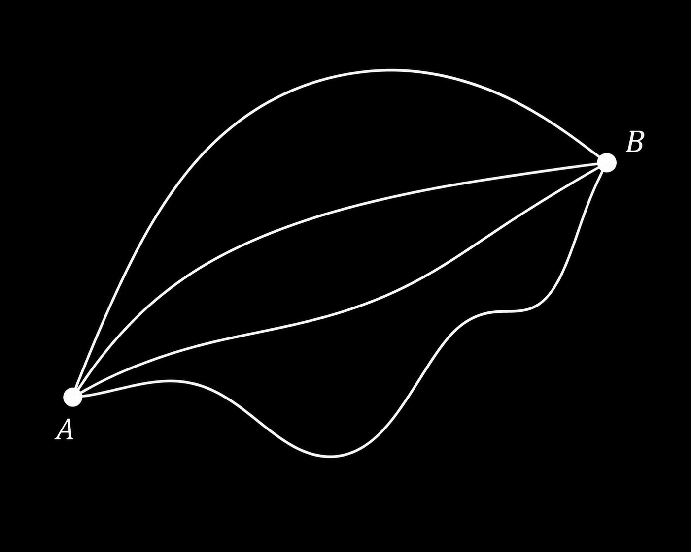
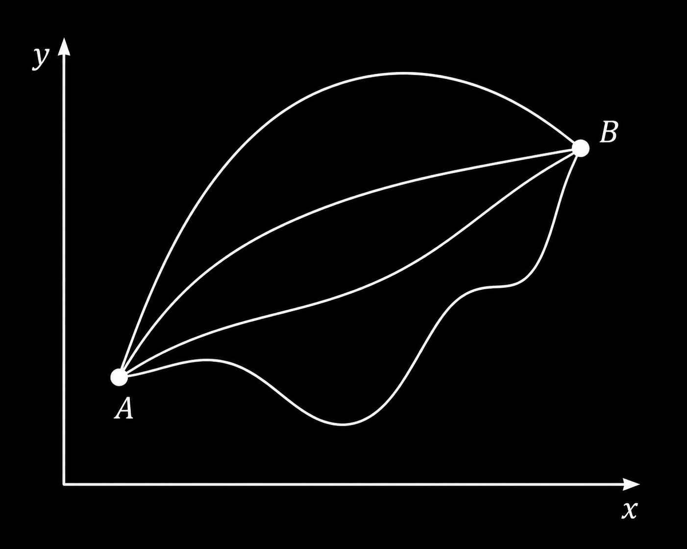

What speed minimises the fuel consumed over a fixed-distance trip?
Optimising a functional.
You want to get from A to B.
You can choose any path connecting them.
You want to minimise the length of the path.
What is the optimal path?

Optimising a functional.
You can express most paths with a function y(x).
How would you compute the length l of a path described by f(x)?

Optimising a functional.
Since $ds=\sqrt{dx^2+dy^2}$ and $\frac{dy}{dx}=y'(x)$, the path length $S$ of $y(x)$ can be expressed as:
$$\int_A^B\sqrt{dx^2+y'(x)^2dx^2}$$
Factoring out $dx$ gets us:
$$S=\int_A^B\sqrt{1+y'(x)^2}dx$$
Optimising a functional.
$S$ is not dependent on a variable. It depends on a function ($y(x)$).
This means that the classical differentiate-and-set-to-0 approach doesn't work.
There's an intuitive, but very long derivation for the solution to the problem, but we'll settle for learning how to use it.
The most powerful equation in all of mathematics*
$$\underbrace{\frac{\partial F}{\partial g}}_{\text{effect of }g(x)}-\underbrace{\frac{d}{dx}}_{\text{change along }x}\;\;\underbrace{\frac{\partial F}{\partial g'}}_{\text{effect of }g'(x)}=0$$
*Still probably not, but "One of many very cool and useful equations" makes for a bad title.
Using it: the shortest path.
Here $g=y$ and $F=\sqrt{1+y'^2}$, so $\frac{\partial F}{\partial y}=0$ and $\frac{\partial F}{\partial y'}=\frac{y'}{\sqrt{1+y'^2}}$.
The equation becomes $\frac{d}{dx}\frac{y'}{\sqrt{1+y'^2}}=0$, so $\frac{y'}{\sqrt{1+y'^2}}$ is constant.
That is only possible if $y'$ is constant, so $y(x)=mx+c$.
The shortest path between two points is a straight line.Wow...
How to use the magic box.
Write what you want to optimise as $\int F(x,g,g')\,dx$.
Compute $\frac{\partial F}{\partial g}$ and $\frac{\partial F}{\partial g'}$.
Plug them into the equation.
Solve the resulting differential equation for $g(x)$.
Use the start and end point to fix the constants.
Where we'll use it.
Water in a pipe: the speed profile with the least viscous loss.
A rolling ball: the path with the shortest travel time.
A hanging chain: the shape with the lowest potential energy.
Spinning water: the surface with the lowest potential energy.
Why is water fastest in the middle of a pipe?
The problem.
Water flows through a pipe of radius $R$ at a fixed flow rate $D_0$.
It sticks to the wall: $u(R)=0$.
We want the speed profile $u(r)$, where $r$ is the distance from the centre.
Setting it up.
Assume nature picks the profile with the least viscous loss: